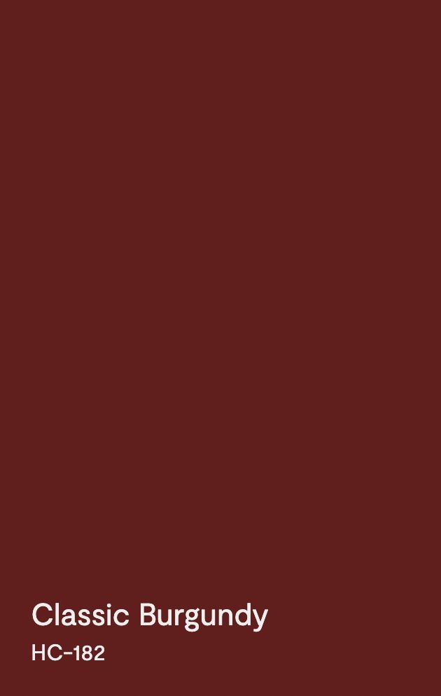

The submitted exhibit is a paint color reference, not a photo of the property — a solid color swatch identifying the proposed exterior siding color.

- Color name
- Classic Burgundy
- Color code
- HC-182
City of Bloomington, Indiana — Board of Zoning Appeals
412 E. Wylie Street — Case ZR2026-05-0022
The submitted exhibit is a paint color reference, not a photo of the property — a solid color swatch identifying the proposed exterior siding color.
